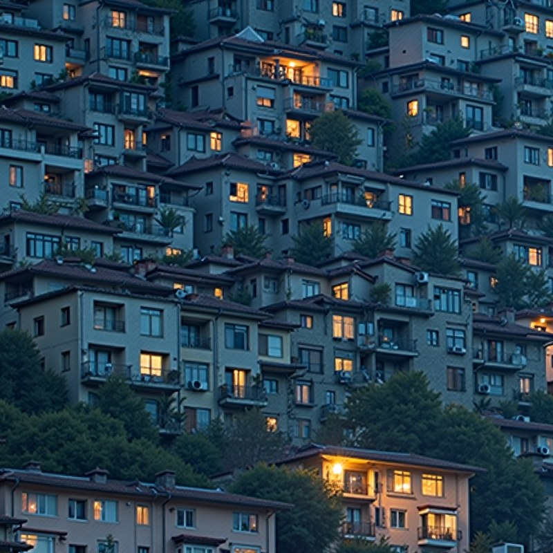
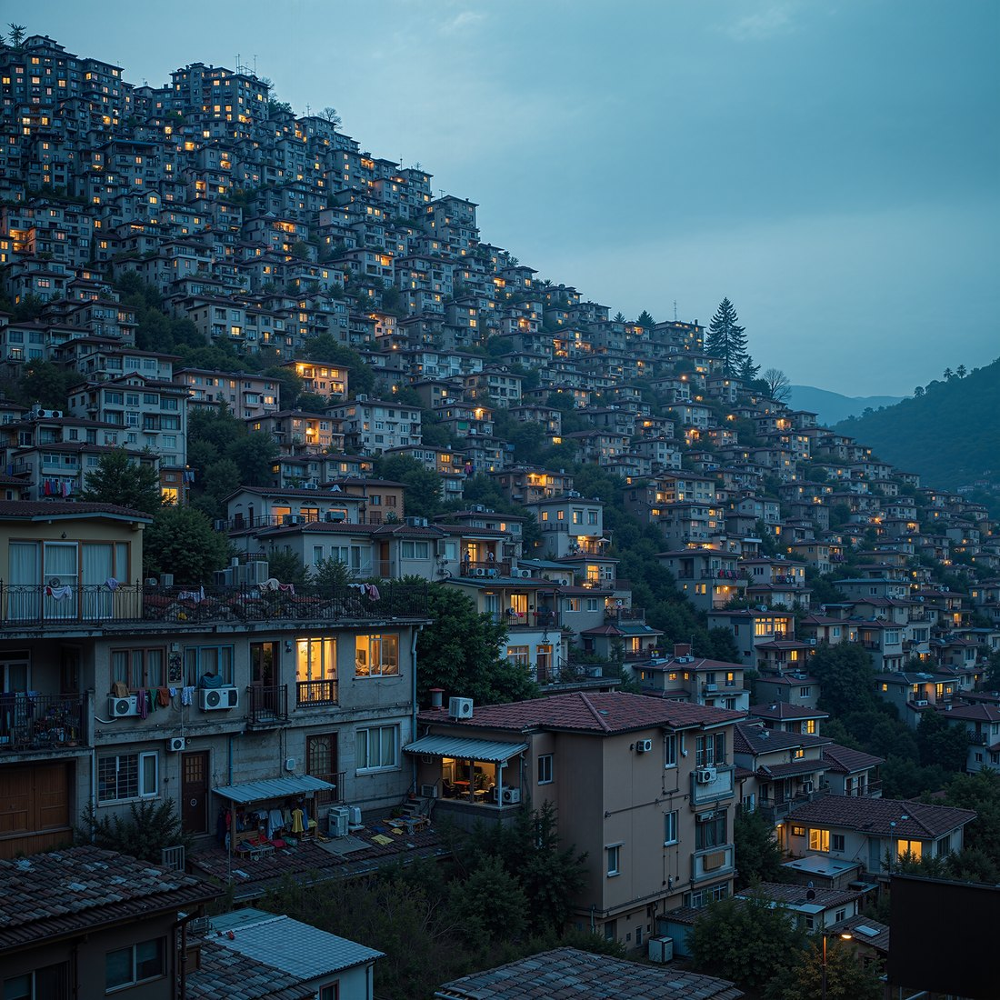
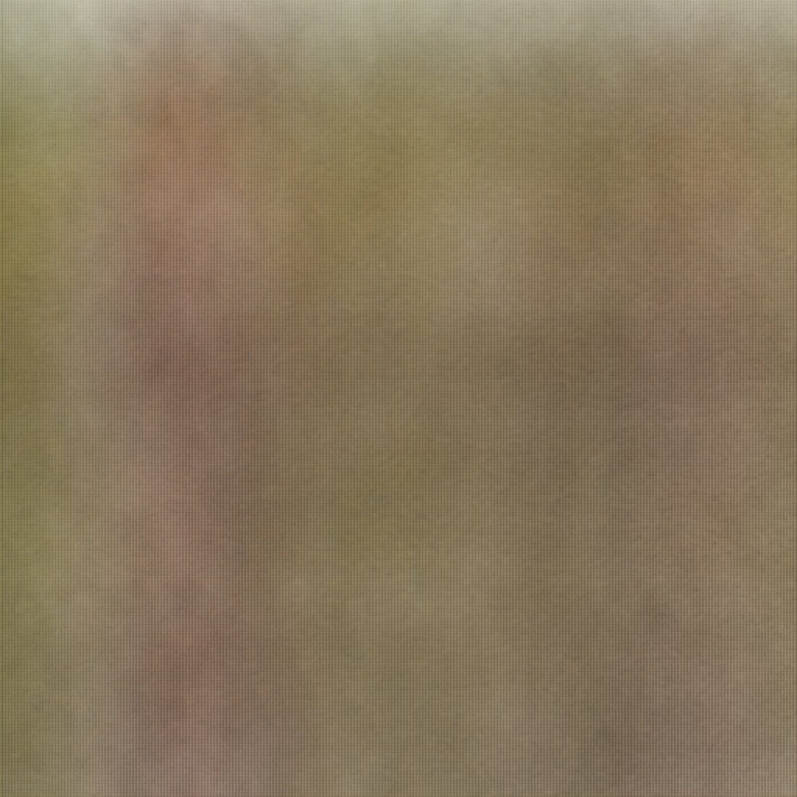
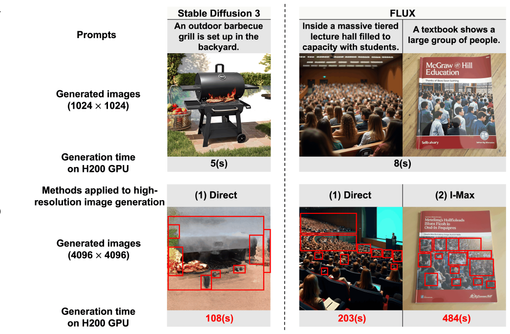
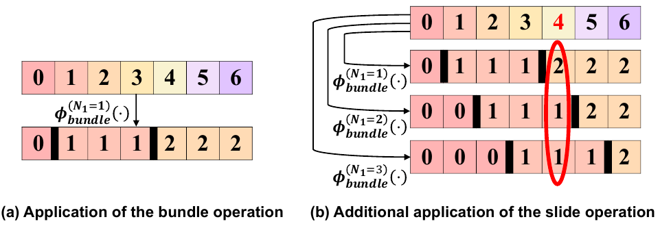
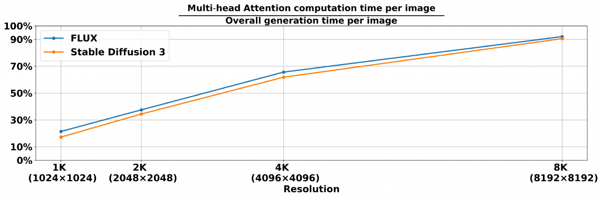

Training-free text-to-high-resolution image generation has recently attracted growing research attention. However, existing studies on this task primarily focus on adapting off-the-shelf U-Net-based diffusion models to high resolutions, with limited progress on adapting off-the-shelf Diffusion Transformer (DiT) models despite their strong text-to-image generation capabilities at limited resolutions. In this work, we find two key challenges particularly hindering the application of off-the-shelf DiT models for high-resolution image synthesis in a training-free manner, namely, spatial disorder and long generation time. To address these challenges, we propose a novel method tailored to adapt off-the-shelf DiT models for high-resolution image synthesis. Extensive experiments show the efficacy of our method.
Every image is 4096×4096, generated by HRDiT from off-the-shelf FLUX.1-dev. Click one to open it larger.
HRDiT generates better detail at 4096×4096. Left is the whole image, right is the detail.

Left is a 1024×1024 image from FLUX.1-dev, scaled up; right is HRDiT. Drag to compare.
Left is FLUX.1-dev run directly at 4096×4096; right is HRDiT, same prompt and seed.


HRDiT is a training-free framework built from two components, each aimed at one of the two challenges and at the cause we identify behind it. It runs on off-the-shelf weights and needs no fine-tuning.

Our analysis traces spatial disorder to the limited expressiveness of the positional embedding mechanism once it is stretched to high resolutions: at high token counts it can no longer keep different pairwise positional signals apart after attention. SPA restores that distinction with two complementary operations. Bundle replaces each token index with a bundle index before it enters the positional encoding, which shrinks the set of pairwise signals the mechanism has to separate. Slide then varies where the bundle boundaries fall and averages over the variants, recovering the positional distinctions that bundling alone would erase inside a bundle.

Profiling shows where the time actually goes: multi-head attention dominates the cost at high resolutions, accounting for over 90% of the generation time for both FLUX and Stable Diffusion 3 at 8K. HAP gives every attention head its own attention scope — the range of image tokens that head is allowed to look at — and prunes the attention computed outside it. The scopes are derived once, offline, from the off-the-shelf model, so generation stays training-free.

@inproceedings{xue2026hrdit,
title={{HRDiT}: Training-Free High-Resolution Image Generation with Off-the-Shelf Diffusion Transformer Models},
author={Xue, Yu and Qu, Haoxuan and Li, Zhuoling and Xu, Hongbin and Yin, Jianxiong and See, Simon and Rahmani, Hossein and Liu, Jun},
booktitle={European Conference on Computer Vision (ECCV)},
year={2026}
}